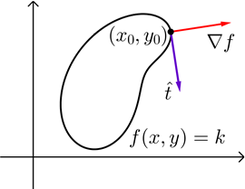
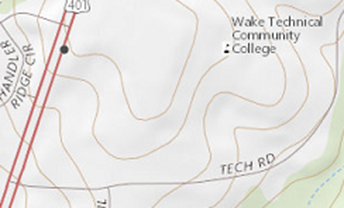
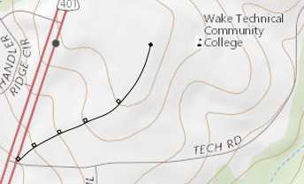

The Gradient
From the video on the previous page, we saw that the gradient of a function \(f(x,y)\) is defined as the vector of its partial derivatives.
Note that we read \(\nabla f\) as "gradient of f" or "del f," and the gradient symbol \(\nabla\) is called the "nabla."
Here are a few more things to consider.
- The gradient of a function \(f(x,y)\) is located in the \(xy\)-plane.
- The gradient is used in computing the directional derivative by \(D_{\vec{u}} f(x,y) = \nabla f(x,y) \cdot \vec{u}\).
- The gradient gives the direction of the maximum value of \(D_{\vec{u}} f(x_0,y_0)\), or the maximum rate of change of \(f\). In other words, the gradient points in the direction (in the \(xy\)-plane) that corresponds to the steepest incline, or ascent, of the surface at the point \((x_0,y_0)\). Its magnitude, \(\lvert \nabla f \rvert\), is the slope of the incline. Similarly, the negative of the gradient, or \(-\nabla f\), points in the direction of the steepest decline, or descent, of the surface at the point \((x_0,y_0)\) which would have a rate of change of \(-\lvert \nabla f \rvert\).
- The gradient can be extended to functions of more than two variables. For example, \(\nabla f(x,y,z) = \langle f_x(x,y,z), f_y(x,y,z), f_z(x,y,z) \rangle\) and therefore \(D_{\vec{u}} f(x,y,z) = \nabla f(x,y,z) \cdot \vec{u}\). In this case, the gradient is a vector in \(xyz\)-space, not the \(xy\)-plane, that gives the direction in which \(f\) is increasing at the greatest rate.
The following GeoGebra applet will help illustrate the gradient of a function \(f(x,y)\) at a point \((a,b)\). You can use the blue point on the \(xy\)-plane to move the corresponding orange point located on the surface of \(f\). You may also click-and-drag to rotate the view around the origin.
- The Gradient is the yellow vector located in the \(xy\)-plane at the blue point \((a,b)\). Observe that the gradient is always perpendicular to the level curve.
- Show the Increasing vector. This green vector shows the steepest incline of the surface of \(f\) at the point \((a,b)\). Imagine if the surface represented a large valley and you were standing at the orange point \((a,b,f(a,b))\). The green vector would be the steepest slope of the valley if you tried walking uphill.
- Show the Decreasing vector. This red vector shows the steepest decline of the the surface of \(f\) at the point \((a,b)\). Again, imagine that the surface represented a large valley and you were standing at the orange point \((a,b,f(a,b))\). The red vector would be the steepest slope of the valley if you tried walking downhill. This means that if you dropped a bucket of water at this point, the water would flow downhill in the direction of the red vector.
- Show the No Change vectors. First, observe that these gray vectors are both perpendicular to the gradient. They represent the direction where the values of \(f\) at the point \((a,b)\) don't change. So \(f\) is neither increasing nor decreasing in these two directions. Again, one more time, imagine that the surface represented a large valley and you were standing at the orange point \((a,b,f(a,b))\). The gray vectors would represent the direction you could walk and remain at the same altitude - you could walk all the way around the pink curve without changing your altitude.
The following video demonstrates how we can compute the gradient of a function.
Level Curves & Tangent Planes
There are a couple quick applications of the gradient that we can look at, in addition to the directional derivative. The first uses the fact that the gradient is perpendicular to the level curve of a function, as illustrated below. This also means the gradient vector \(\nabla f\) is perpendicular to the unit tangent vecttor \(\hat{t}\) at the specified point.
Example:
Consider the contour map of the region around the Southern Wake Tech campus shown below. We can see several level curves marking incremental changes in altitude.
Suppose a person standing at the intersection of Tech Road and U.S. 401 decided to walk towards campus along the steepest route. Draw the estimated path the student would walk.
Since the gradient vector is always perpendicular to the level curves, the path shown on the map below would represent the steepest path a person could walk from the entrance at Tech Rd and 401 up to the main part of the college campus. The illustrated path is perpendicular to each curve at the point where they intersect.
The second application of the gradient involves tangent planes, which we learned about in the previous lesson. If we have a function \(F(x,y,z) = 0\) that defines \(z\) implicitly as a function of \(x\) and \(y\), then the gradient is the normal vector to the surface and the equation of the plane tangent to \(F\) at the point \((x_0,y_0,z_0)\) can be expressed by the following equation.
\[F_{x}(x_0,y_0,z_0)(x-x_0) + F_{y}(x_0,y_0,z_0)(y-y_0) + F_{z}(x_0,y_0,z_0)(z-z_0) = 0\]This should look familiar since it matches the tangent plane equation we saw in the previous lesson. The following video was included in the previous lesson, but will maybe make a little more sense now.